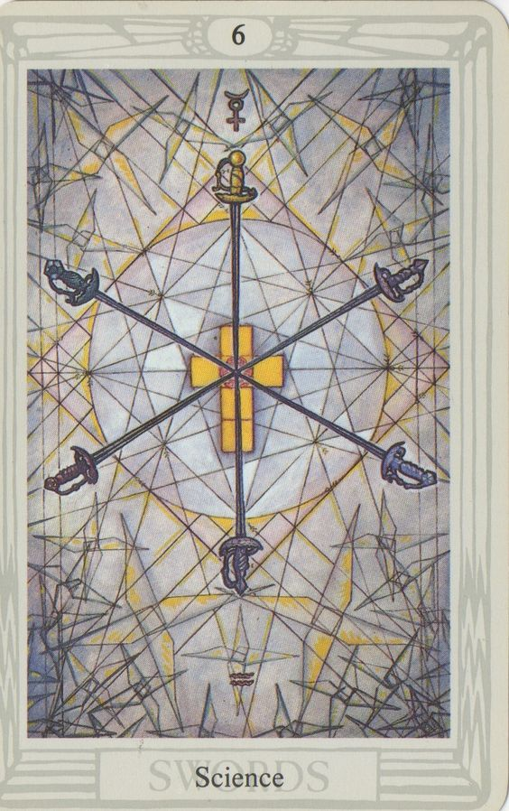

Definitely not a dolphin
Memory in Bondage
Memory in Bondage

Rulers rule by measure
Superiour to thine own
Their saber of knowledge sharper,
Their cape abilities greater
As power reigns showers from above
Das Capital cities are invested with the first word of the
Prison sentence, written on paper rapiers
Authors of the libre of slavery and liberty
Origin of authority
Pact of density, attraction and James Bondage
As beasts ye are ruled by the breast
Mama’s mammaries heal and help the whelp’s wounds
From womb to tomb, beginnings end and
Sensors censor what cheaters teach
Monks contemple-ate the world-word of God
Rough rogues inck corporations for stakeholders to take stock in
And pretty pets fight petty wars, restlessly wrestling
To discover which of them is the weiner-take-all
And which will flight-fright away
The divine-right hand writes the will
Dividing math and myth, sin and signal
Giving itself rights to the rites of initiation,
Making the left hand feel left out, sinistre and gauche
“Tight is right”, says acetylcholine, who whispers in the ears of
muscle tension and mental attention
“Hold onto the gold extracted from the mine mine mind”
“Let not the things you think delude or dilute your power”
“Hear what is here, be not prey of the prayers for weakness”
Etching our meme-ories, fetched from the void
Of streaming dreams of consciousness
Of pro-grammars, antigrammers and soil
From the slit of the slut,
To the route of the root
“Evil is vile” and “God is Good”
Orderly orders ordinarily produce regular regulation
But chaos snores and ignores the tale,
Content to preside over the dents in the caulk of the cock
From these, and all other scared sacred bramblings
Feel Free
Sans serifly,
Meta alchemy